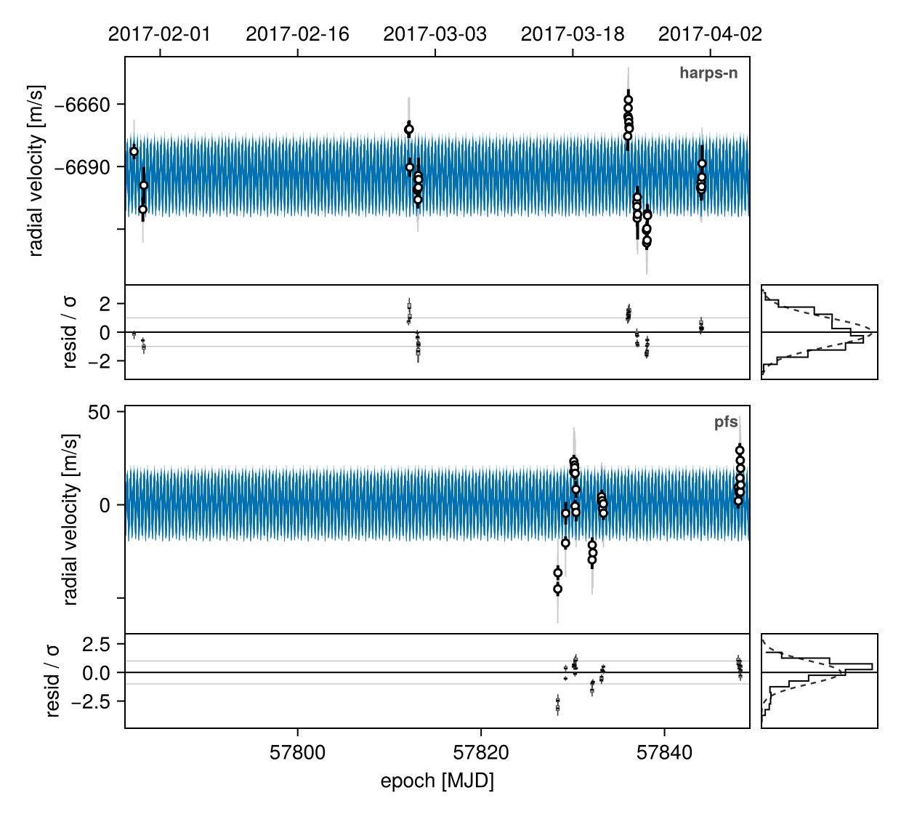
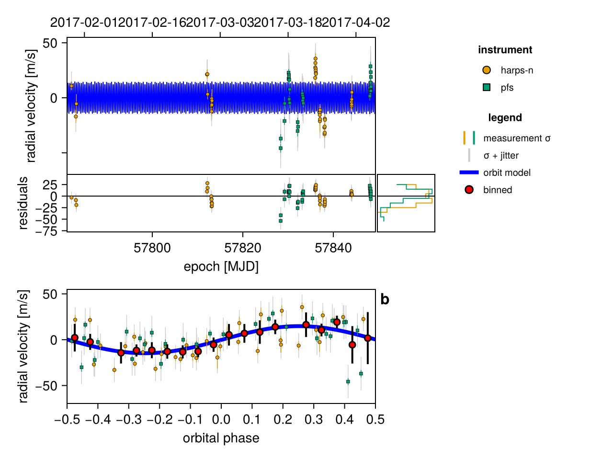
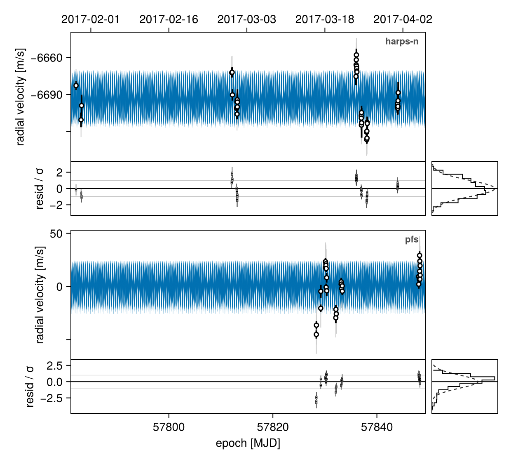
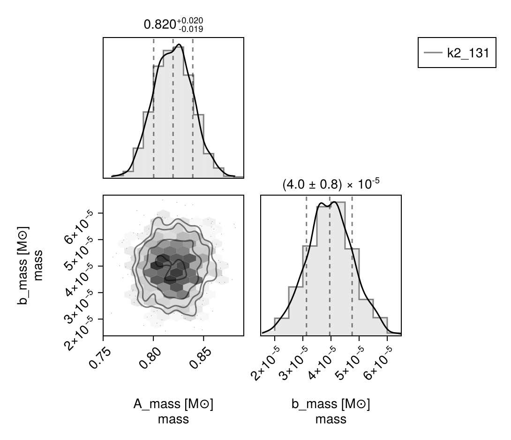

Basic RV Fit
You can use Octofitter to fit radial velocity data, either alone or in combination with other kinds of data. Multiple instruments (any number) are supported, as are arbitrary trends, and gaussian processes to model stellar activity.
You can specify either stellar reflex RVs (what most people mean when they say "RV") or relative RVs–-that is, the radial velocity of one body relative to another.
RadialVelocityObs(data; target=A, ref=Barycentre) # stellar reflex ("absolute" RV)
RadialVelocityObs(data; target=b, ref=A) # relative RV (see the relative RV tutorial)For this example, we will fit the orbit of the planet K2-131, and reproduce this RadVel tutorial.
We will use the following packages:
using Octofitter
using OctofitterRadialVelocity
using PlanetOrbits
using CairoMakie
using PairPlots
using CSV
using DataFrames
using DistributionsWe will start by downloading and preparing a table of radial velocity measurements, and create a RadialVelocityObs object to hold them.
The following functions from OctofitterRadialVelocity load data directly from various public RV databases:
OctofitterRadialVelocity.HARPS_DR1_rvs("star-name")OctofitterRadialVelocity.HARPS_RVBank_rvs("star-name")OctofitterRadialVelocity.Lick_rvs("star-name")OctofitterRadialVelocity.HIRES_rvs("star-name")
Make sure to credit the sources using the citation printed when you first access the catalog. Each returns a plain Table with epoch, rv, and σ_rv columns, ready to hand to RadialVelocityObs.
If you would like to manually specify RV data, use the following format:
rv_data = Table(
# epoch is in units of MJD. `jd2mjd` is a helper function to convert.
# you can also put `years2mjd(2016.1231)`.
# rv and σ_rv are in units of meters/second
epoch=jd2mjd.([2455110.97985, 2455171.90825]),
rv=[-6.54, -3.33],
σ_rv=[1.30, 1.09]
)
rv_obs = RadialVelocityObs(rv_data;
target=A, # the body whose velocity was measured: the star
ref=Barycentre, # measured against the system barycentre
name="insert name here",
# Secular (perspective) acceleration is modelled per dataset: an absolute
# series defaults to `secular_acceleration=:model`. Pass
# `secular_acceleration=:data_corrected` if your pipeline already removed it.
variables=@variables begin
offset ~ Uniform(-1000, 1000) # m/s
jitter ~ LogUniform(0.01, 10) # m/s
end
)Basic Fit
For this example, to replicate the results of RadVel, we will download their example data for K2-131 and format it for Octofitter:
rv_file = download("https://raw.githubusercontent.com/California-Planet-Search/radvel/master/example_data/k2-131.txt")
rv_dat_raw = CSV.read(rv_file, DataFrame, delim=' ')
rv_dat = DataFrame();
rv_dat.epoch = jd2mjd.(rv_dat_raw.time)
rv_dat.rv = rv_dat_raw.mnvel
rv_dat.σ_rv = rv_dat_raw.errvel
tels = sort(unique(rv_dat_raw.tel))Start by creating the bodies you want in the model:
# Star
A = Body(
name="A",
variables=@variables begin
mass ~ truncated(Normal(0.82, 0.02), lower=0.1) # M⊙ (Baines & Armstrong 2011)
end
)
# Planet
b = Body(
name="b",
about=A,
variables=@variables begin
# A radial-velocity-only fit: RVs cannot constrain the inclination or the
# ascending node, so we fix them. With i = π/2 the fitted `mass` is really
# m·sin(i), i.e. a minimum mass.
i = pi/2
Ω = 0.0
e = 0.0
ω = 0.0
# `P` is an orbital element, given in days.
P ~ truncated(Normal(0.3693038, 0.0000091), lower=0.0001) # days
# Phase. `τ` is a dimensionless orbital phase in [0,1); pick a reference
# epoch (MJD) near your data.
τ ~ UniformCircular(1.0)
tp = τ * P + 57782
# Masses are in solar masses everywhere.
# `mjup` is just a constant to convert jupiter masses to solar.
mass ~ LogUniform(0.001mjup, 10mjup) # M⊙
end
)This table includes data from two instruments. We create a separate observation for each, since the zero point and the jitter are per-instrument variables:
rvlike_harps = RadialVelocityObs(
rv_dat[rv_dat_raw.tel .== "harps-n", :];
target=A, ref=Barycentre,
name="harps-n",
variables=@variables begin
offset ~ Normal(-6693, 100) # m/s
jitter ~ LogUniform(0.1, 100) # m/s
end
)
rvlike_pfs = RadialVelocityObs(
rv_dat[rv_dat_raw.tel .== "pfs", :];
target=A, ref=Barycentre,
name="pfs",
variables=@variables begin
offset ~ Normal(0, 100) # m/s
jitter ~ LogUniform(0.1, 100) # m/s
end
)Finally we assemble the system.
sys = System(
name="k2_131",
bodies=[A, b],
observations=[rvlike_harps, rvlike_pfs],
)System model k2_131 — 2 bodies, 1 orbits, 2 observations
frame: none (physical units)
Body A (root)
mass ~ Truncated(Distributions.Normal{Float64}(μ=0.82, σ=0.02); lower=0.1)
Body b about A
P ~ Truncated(Distributions.Normal{Float64}(μ=0.3693038, σ=9.1e-6); lower=0.0001)
τx ~ Distributions.Normal{Float64}(μ=0.0, σ=1.0)
τy ~ Distributions.Normal{Float64}(μ=0.0, σ=1.0)
mass ~ Distributions.LogUniform{Float64}(a=9.545942339693249e-7, b=0.00954594233969325)
τ = (atan(τy, τx) / (2π)) * 1.0
i = pi / 2
Ω = 0.0
e = 0.0
ω = 0.0
tp = τ * P + 57782
RadialVelocityObs "harps-n" A vs Barycentre
RadialVelocityObs "pfs" A vs Barycentre
UnitLengthPrior [b]
We didn't bother specifying the system's reference frame parallax, position, proper motion, or barycentric RV. Adding those in would enable second order corrections like light travel time correction, and make the secular (perspective) acceleration term non-zero — it is definitionally zero without a full absolute frame. That term is declared per dataset: an absolute RV series models it by default (secular_acceleration=:model), and you pass secular_acceleration=:data_corrected for a dataset whose pipeline already removed it. See How Octofitter Computes Orbits.
We can now prepare our model for sampling.
model = Octofitter.LogDensityModel(sys)LogDensityModel for System k2_131 of dimension 9 and 70 epochs with fields .ℓπcallback and .∇ℓπcallback
Initialize the starting points, and confirm the data are entered correctly:
init_chain = initialize!(model)
octoplot(model, init_chain)
Sample:
using Random
rng = Random.Xoshiro(0)
chain = octofit(rng, model)Chains MCMC chain (1000×29×1 Array{Float64, 3}):
Iterations = 1:1:1000
Number of chains = 1
Samples per chain = 1000
Wall duration = 45.15 seconds
Compute duration = 45.15 seconds
parameters = A_mass, b_P, b_τx, b_τy, b_mass, b_τ, b_i, b_Ω, b_e, b_ω, b_tp, harps_n_offset, harps_n_jitter, pfs_offset, pfs_jitter
internals = n_steps, is_accept, acceptance_rate, hamiltonian_energy, hamiltonian_energy_error, max_hamiltonian_energy_error, tree_depth, numerical_error, step_size, nom_step_size, is_adapt, loglike, logprior, logpost, tree_depth, numerical_error
Use `describe(chains)` for summary statistics and quantiles.
Excellent! Let's plot the results. rvplot is a handy way to plot a single draw from the posterior with all instruments in one panel, and a phase folded curve.
rvplot(model, chain)
It's a good idea to plot a sample of many draws from the posterior too. This is a great way to see if your posterior is multi-modal. Here, we can't in general put data from all instruments on the same panel. Instrument offests, trends, etc vary across draws so the data points would have to shift around. Instead, this function uses a separate panel for each instrument. We can't plot the phase folded data across multiple draws either, since the period varies.
octoplot(model, chain)
And create a corner plot:
octocorner(model, chain, small=true)
This example continues in Fit Gaussian Process.
Simulating RV Data
To generate synthetic radial velocity data for testing, the recommended approach is to use Octofitter's built-in simulation capabilities. See the Generating and Fitting Simulated Data tutorial for a complete guide on simulating data from models.
Alternatively, you can generate RV data directly with PlanetOrbits.jl:
# A one-planet system: 1 M⊙ star, 1 Mjup companion.
star = PlanetOrbits.Body(mass=1.0, name=:A)
comp = PlanetOrbits.Body(mass=mjup, name=:b)
posys = PlanetOrbits.System(
(star, comp),
(PlanetOrbits.Orbit(comp, about=star; a=1.0, e=0.1, ω=0.5, i=pi/2, Ω=0.0, tp=58000.0),)
)
epochs = 58000.0:10.0:58400.0
traj = orbitsolve(posys, epochs)
# The star's reflex velocity against the system barycentre --- what a
# spectrograph pointed at the star measures. [m/s]
rv_star = [radvel(traj[i], :A, barycentre(posys)) for i in eachindex(epochs)]
# The companion's velocity relative to the star --- what relative RV measures.
rv_rel = [radvel(traj[i], :b, :A) for i in eachindex(epochs)]
extrema(rv_star)(-31.05578651449418, 26.039607288354595)